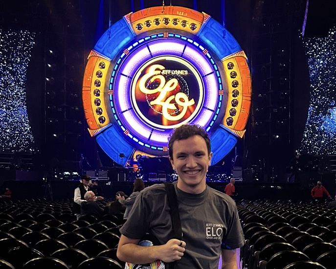

Joel Sanchez is a student in MI 349 who finally caved and is doing all of his coding in GitHub. Joel thanks Professor Siarto for telling him to make this change.
In his free time, Joel:
Currently, my favorite movie is Wall-E. It’s a movie I watched a lot as a kid, but there’s an undeniable charm and simplicity that it maintains all these years later. A lot of movies have super complex characters and insane, multi-layered writing, but sometimes, I want to watch the movie where two cute robots fall in love by saving the world. Sometimes, that’s enough. Conversely, my current favorite album is Electric Light Orchestra’s “Out of the Blue.” There’s a ton going on and the album tells a complete story through the text of its music. It’s taken me a ton of listens to fully get it, and I’m 100% sure there’s still something I’m missing. My favorite video game is Super Mario Galaxy (a lot of space going on here (maybe I bring that up in therapy(?))). It is one of the best games ever made, in my very biased opinion. The level design is phenomenal, the soundtrack is near perfection, and the controls are buttery smooth.